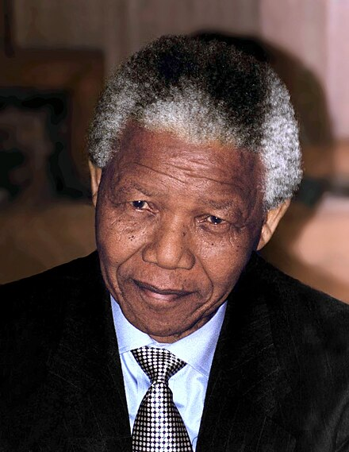

Nelson Rolihlahla Mandela was a South African anti-apartheid activist and politician who served as the first president of South Africa from 1994 to 1999. He was the country's first black head of state and the first elected in a fully representative democratic election.
A Xhosa, Mandela was born into the Thembu royal family in Mvezo, South Africa. He studied law at the University of Fort Hare and the University of Witwatersrand before working as a lawyer in Johannesburg. There he became involved in anti-colonial and African nationalist politics, joining the ANC in 1943 and co-founding its Youth League in 1944. After the National Party's white-only government established apartheid, a system of racial segregation that privileged whites, Mandela and the ANC committed themselves to its overthrow. He was appointed president of the ANC's Transvaal branch, rising to prominence for his involvement in the 1952 Defiance Campaign and the 1955 Congress of the People. He was repeatedly arrested for seditious activities and was unsuccessfully prosecuted in the 1956 Treason Trial. Influenced by Marxism, he secretly joined the banned South African Communist Party (SACP). Although initially committed to non-violent protest, in association with the SACP he co-founded the militant uMkhonto we Sizwe in 1961 and led a sabotage campaign against the government. He was arrested and imprisoned in 1962, and, following the Rivonia Trial, was sentenced to life imprisonment for conspiring to overthrow the state.
Mandela served 27 years in prison, split between Robben Island, Pollsmoor Prison and Victor Verster Prison. Amid growing domestic and international pressure and fears of racial civil war, President F. W. de Klerk released him in 1990. Mandela and de Klerk led efforts to negotiate an end to apartheid, which resulted in the 1994 multiracial general election in which Mandela led the ANC to victory and became president. Leading a broad coalition government which promulgated a new constitution, Mandela emphasised reconciliation between the country's racial groups and created the Truth and Reconciliation Commission to investigate past human rights abuses. Economically, his administration retained its predecessor's liberal framework despite his own socialist beliefs, also introducing measures to encourage land reform, combat poverty and expand healthcare services. Internationally, Mandela acted as mediator in the Pan Am Flight 103 bombing trial and served as secretary-general of the Non-Aligned Movement from 1998 to 1999. He declined a second presidential term and was succeeded by his deputy, Thabo Mbeki. Mandela became an elder statesman and focused on combating poverty and HIV/AIDS through the charitable Nelson Mandela Foundation.
Mandela was a controversial figure for much of his life. Although critics on the right denounced him as a communist terrorist and those on the far left deemed him too eager to negotiate and reconcile with apartheid's supporters, he gained international acclaim for his activism. Globally regarded as an icon of democracy and social justice, he received more than 250 honours, including the Nobel Peace Prize. He is held in deep respect within South Africa, where he is often referred to by his Thembu clan name, Madiba, and described as the "Father of the Nation".
Copyright © 2024 phrostq